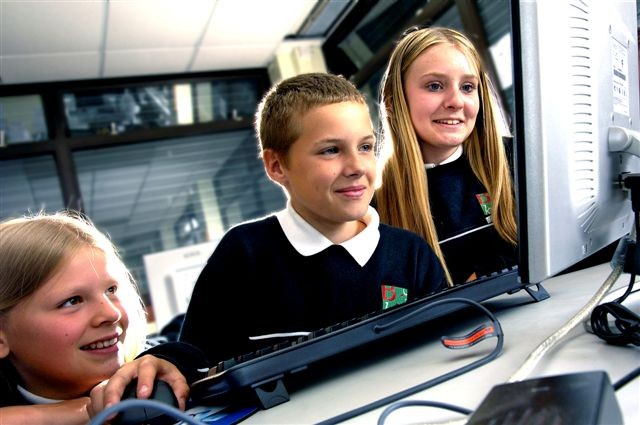

Our mission here at eSTEAMed is To foster the young generation's interest and love for Science, Technology, Engineering and Mathematics through the use of Art and movement.
eSTEAMed was born out of love for STEM and creative teaching by two young educators that love to shake things up in the classroom and do things differently. When referring to STEAM/STEM we are focusing on the following:
S Science
T Technology
E EngineeringA Arts
M Math
Our goal is to get kids to try Science, Technology, Engineering and Math through the creative lense of the Arts in dance and movement. We believe that our kids deserve creative, enriching,well rounded programs that cater to all types of students. With a staff of dedicated individuals sharing the same goal, the eSTEAMed environment and program is one of welcoming and accept.
Our program is tailored for elementary and middle schools. We teach STEM concepts through Arts. Our current curriculum teaches programming concepts through the art of movement and dancing. We use MIT platform called Scratch to animate dance routines created by our students and professional choreographers. In the near future we will tackle other areas of STEM with creative and engaging after school programs that kids actually love!
Here at eSTEAMed we use and teach coding, the process of assigning a code to something for the purposes of classification or identification, to kids in an entertaining and creative way. We have created a program that enables children to develop their computer and coding skills through different aspects of dance, movement, and in the exciting realm of the arts.
Moses St. Bernard graduated from St. Francis College with a Bachelor of Science for Information Technology & Psychology. He is really excited to be a co-founder of his new company eSTEAMed.
What does this team member to? Keep it short! This is also a great spot for social links!
Kenya graduated from NYU Polytechnic School of Engineering with a Bachelors of Science Degree in Mechanical Engineering. Kenya has developed experience across various service industries in the areas of Aircraft Maintenance, Accounting and Administration, Sales, Student Services and Volunteering.
Jessica Stroh is a New York City based dancer, choreographer, and educator. Hailing from Ocala, Florida, Jessica trained with the Marion Ballet Theatre for eight years under the direction of Nicole Benson. Attaining a Bachelors of Fine Arts in Dance Performance and Psychology in 2015 (Summa Cum Laude) from The University of South Florida in Tampa, Florida.
JJacqueline Dugal grew up in West Palm Beach, Florida and received her BFA in Dance Performance and Entrepreneurship from the University of South Florida before moving to New York. A performer, creator, and educator, Jacqueline has taught arts programming to students of all ages from young children to adult.